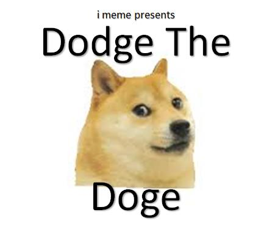
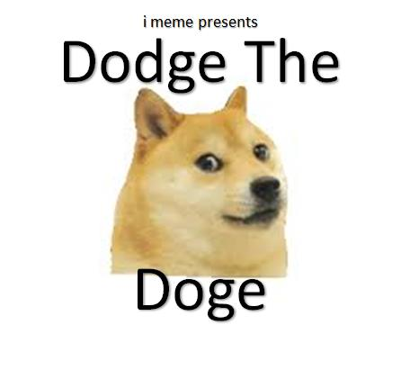

About Me
I graduated De Montfort University in 2016 with a Second class (upper) degree with honors, this included a one year placement working for a small software developer. Prior to this I completed a two year access course at Leicester College receiving a triple grade distinction. Previously to this I was an assistant manager in a busy restaurant, on a track to becoming a manager however I didn’t feel passionate about this form of work so with a heavy heart at the age of twenty four I applied to the access course and began my studies. It had been a challenging six years and I have overcome many personal and professional changes, I have become a husband and father to two beautiful children. Leading me to become more committed to my work. This has however not affected my passion for programming, development and also 3D modeling.


 
